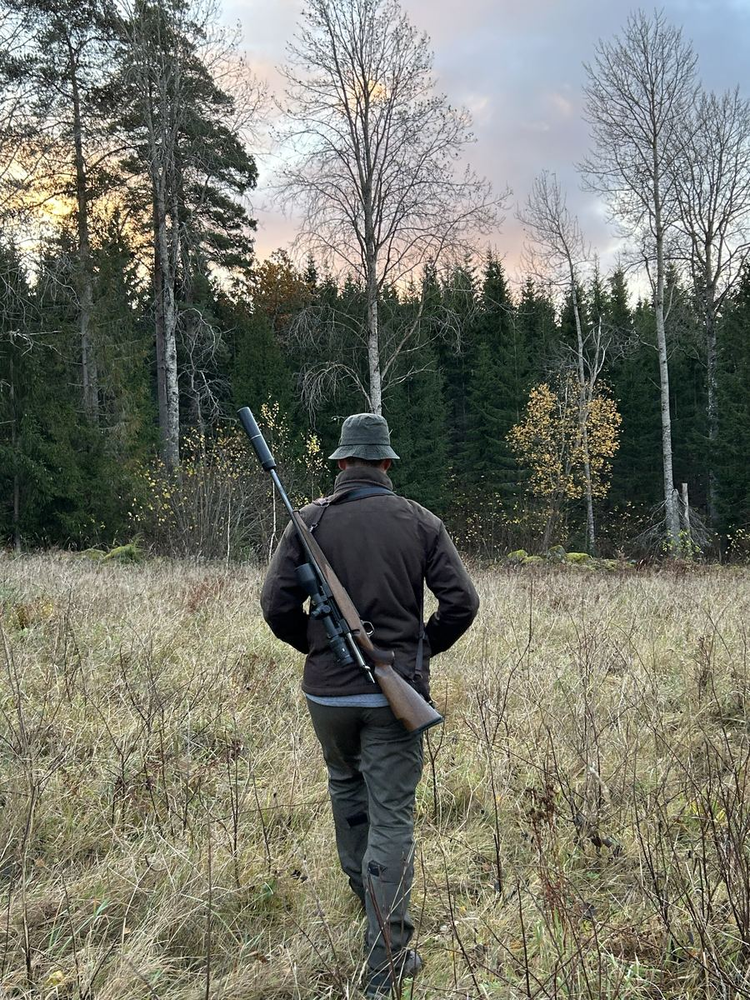
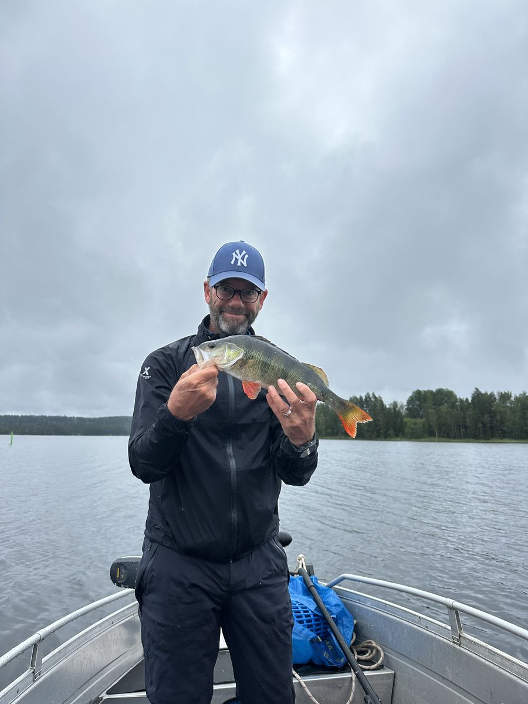
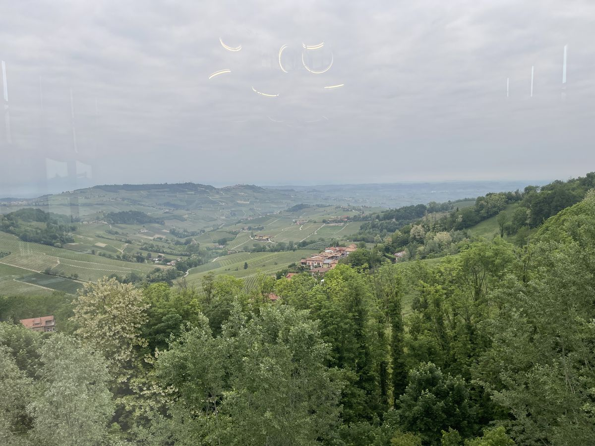
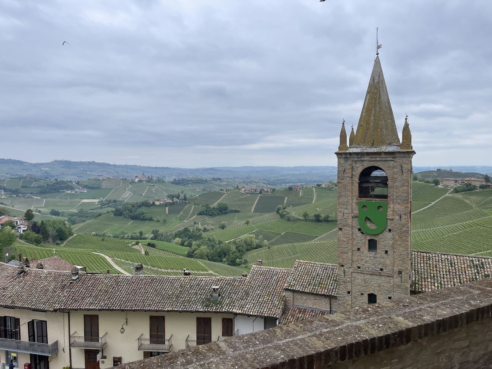
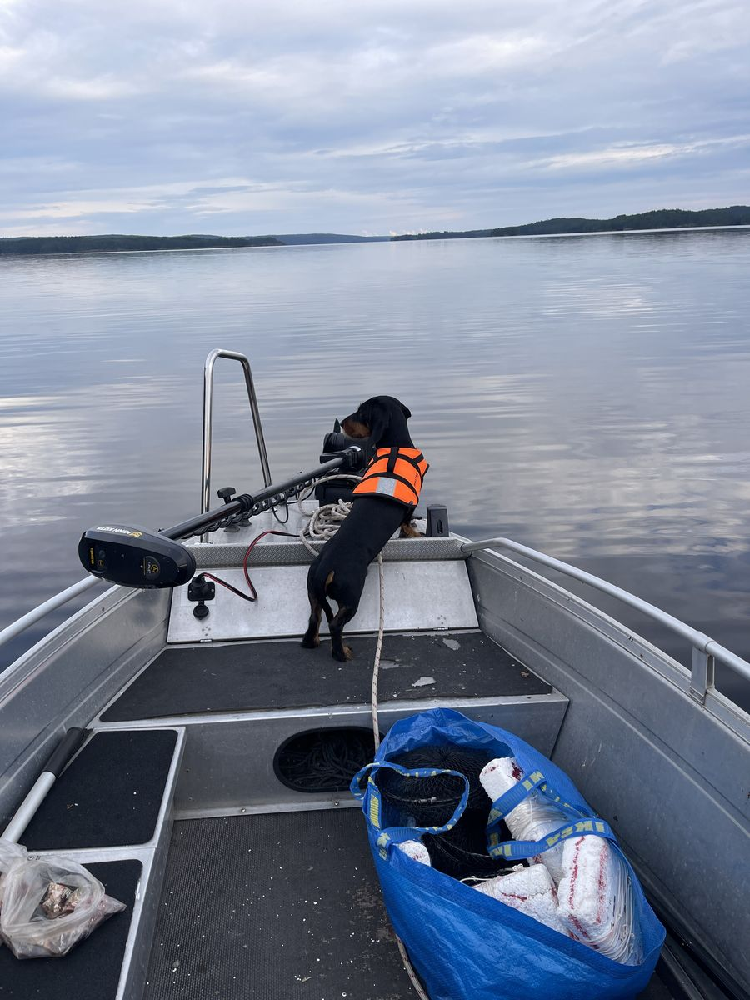

Kök · Vin · Jakt · Fiske · Skog
Välkommen hem
Allt i ett kök, samlat på ett ställe. Maten du lagar, viltet i frysen, vinet i källaren – och hela livet runtomkring som gör maten värd att laga.
Utforska Det här är jag↓
Allt i ett kök, samlat på ett ställe. Maten du lagar, viltet i frysen, vinet i källaren – och hela livet runtomkring som gör maten värd att laga.
Utforska Det här är jagDet började med en frys full av vilt och en vinkällare som växte. Idag är det ett digitalt hem för allt som händer i köket – byggt bit för bit, av någon som lika gärna står i ett jakttorn, vid en kräftbur eller på en vingård i Piemonte.
Varje del löser sin sak – och de pratar med varandra. Vinet vet vad som passar viltet, kocken vet vad som finns i frysen.
Vad blir det idag? AI-kocken föreslår middag av det du faktiskt har hemma – från frys och skafferi.
Håll koll på viltet. Vildsvin, älg, rådjur – styckdetalj, fack och datum. Aldrig mer en gåtfull påse längst bak.
Hela källaren i fickan. Fota etiketten så läser appen in vinet åt dig – druva, årgång, hyllplats.
Vad finns hemma? Håll reda på skafferiets grunder så kocken vet vad som går att laga – och vad som saknas.
Bakom varje måltid finns en tur till skogen, sjön eller en vingård. Det är där maten – och glädjen – börjar.

Vildsvin och vilt från de svenska skogarna – råvaran i sin renaste form.

Augustinätter vid sjön med burar och lykta. En svensk höjdpunkt.

En fin abborre från spegelblankt vatten – fångst till köket.

Frankrike, Italien, Tyskland. Ny i kunskapen, men nyfiken på varje druva.

Pers Kök & Vinkällare är inte byggt av ett mjukvarubolag. Det är byggt av en jägare, fiskare och vinälskare som ville ha ordning på sitt eget kök – och som lärde sig bygga det själv, tillsammans med en AI.
Resorna till vingårdarna med Maria, viltet från skogen, kräftorna från sjön, vinerna som samlats genom åren – allt fick en plats. Det som började som en fryslista blev ett helt hem.
"Jag ville bara hitta mitt vildsvin i frysen. Det blev lite mer än så."
Lite av det som inspirerar – vingårdar, gränder och dukade bord från resorna.







Idag bor allt på din egen enhet. Snart kan du logga in, ta med ditt kök till alla dina skärmar – och dela vinkällaren med vänner.
Öppna appen